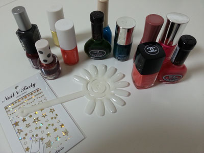
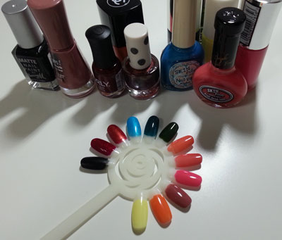
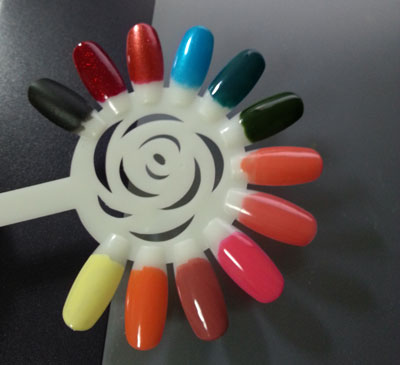
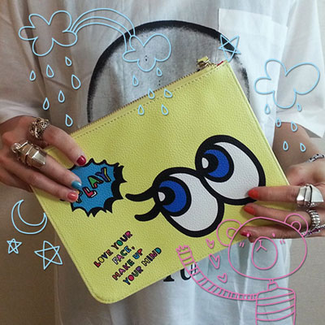
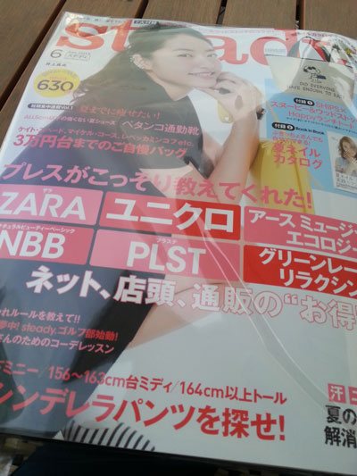
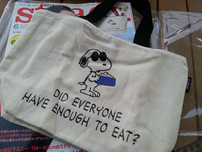
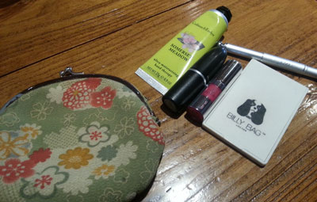

부산댕겨왔습니당 :)
막판 서울 돌아오기전 소처럼 일하고 한번 흐름깨지니까
일주일 내리 컨디션이 엉망이었음 ㅠㅠ
여행후기는 요기:
토요일
늦게까지 자야하는데 아침 9시반에 깨서 억울함 ㅜㅜ
11시까지 침대서 뭉개다가 기어나와서 동네마실 댕겨옴 ^^;;
서점 돌아댕기고 카페가서 커피한잔 마시면서 그림좀 그리구
근처에 네일몰이 있길래 들어가서 구경하다
네일팁이랑 스티커를 하나 사왔당 :)

이전부터 칼라차트 함 만들어 보고싶었는데 잘되었당 ㅎㅎ

오밤중에 작업시작

왼쪽 위 깜장부터
Barry M - MATTE Nail Paint - 깜장
ORLY - Star Spangled (이건 에딘버러 댕겨오면서 공항서 구입한 잡지 부록인데 색이 넘 이뻐서 놀람 / 아직도 매우 애용중 ^^)
TopShop - 301 Miss Dazzle / 색이 묘하게(...?) 이쁘다
스킨푸드 네일비타 알파 - 토르말린
Nails inc. - electric teal (생각보다 잘 안바르게 됨;; 어울리는 조합을 찾고싶다 ;ㅂ;)
스킨푸드 과일주 네일 - 올리브주
샤넬 르 베르니 - 오렌지 피즈
스킨푸드 과일주 네일 - 자몽주 (오렌지 피즈와 함께 최고 자주 사용하는 색 :D )
No7 Gel-Look Shine - summer holiday (엄청 촌티 팍팍나는 쌩핑크를 사고싶었음. 그리고 잘 사용안.....)
부르조아 - Beige glamour (한참 장미색에 불타오를때 구입한 네일 / 가을에 더 잘어울리는 색 )
네이처 리퍼블릭 - 24 선데이 오렌지
네이처 리퍼블릭 - 젤광택 05 베이비 옐로
가장 최근에 사본 네이처 리퍼블릭
오렌지는 맘에드는디 노란색은 잘 모르것다;; 균일하게 안발려 ㅜㅜ
팁에 바른것처럼만 색 나오믄 잘 쓰것는디 ㅜㅜ
네일 바를때 최소 2-3가지 색을 사용하는걸 좋아해서
어울리는 색조합을 찾고있음
이것저것 시도해보다 결국 분홍분홍이로 되돌아 오곤하는데
여튼 차트를 완성하고 처음 드는생각은 더사도 되겠는디? 였음 ㅋㅋㅋㅋ
최근 이것저것 잡지를 구입해 보는중 (반은 부록에 눈이 어두워서^^;;)

보그걸 부록인 Playnomore 파우치
노랑노랑한게 귀엽당//
인스타그램에 올린 사진 :)

스누피 가방이 귀엽길래 잡지를 샀습니다(......)

생각보다 사이즈가 무지 작아서 놀랐음 ^^;;
이래 그림그릴 빈공간 많이 보이는 에코백 + 작은천가방이 보이면
우선 집어듭니다^^;;;

커피숍서 노닥거리다 찍어본 내 파우치
평소에는 딱 요래 들고다닙니다;;
크랩트리앤에블린 핸드크림 / 맥 임패션드 / 랑콤 미니 립글 337 / 손거울 / 페이스샵 립브러시
파우치를 바꿔볼까 생각하다가도
파운드랜드였나 tiger에서 산 £2짜리 동전지갑인데
죠 똑딱이 단추로 여닫는게 늠 편해서 아직도 이걸 못 버리고 있어용;;
그럼 오늘의 탱자탱자 끗!